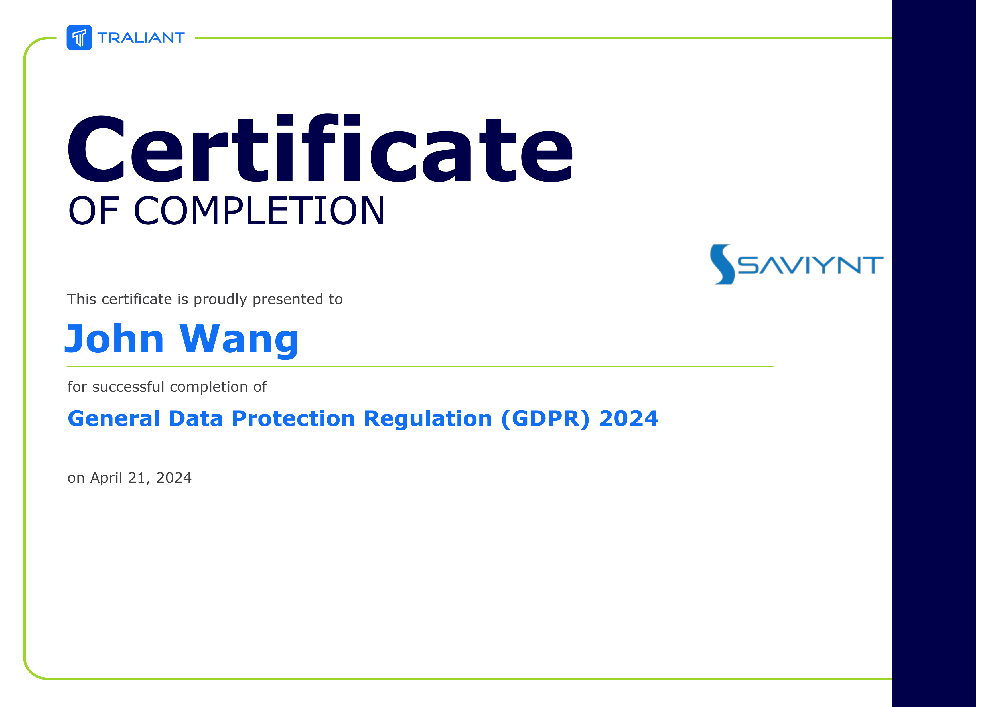
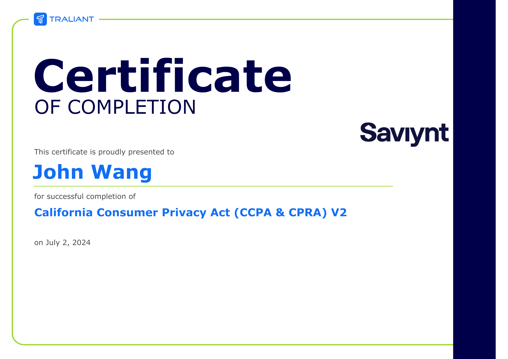

John's Security: InfoSec Certificates
- Fundamentals
- Corporate Information Security Awareness - Proofpoint 2014 from Proofpoint
- Saviynt Information Security Annual Training from Saviynt
- 2024 Kevin Mitnick Security Awareness Training from KnowBe4 by Kevin Mitnick
- 2024 Common Threats from KnowBe4
- Top 5 Security Awareness Fundamentals from KnowBe4
- Cybersecurity: Every second counts from KnowBe4
- Non-Technical Security from KnowBe4
- Concepts
- General Data Protection Regulation (GDPR)
- California Consumer Privacy Act (CCPA)
- Phishing
- Two-Factor Authentication
- Zero Trust
- Passwords
- Email Protection
- 2024 Kevin Mitnick Enabled Content Demonstration from KnowBe4 by Kevin Mitnick
- Fake Meeting Request Demonstration from KnowBe4 by Kevin Mitnick
- Phil Hendrie & Kevin Mitnick Pretexting - Credential Harvesting Attack from KnowBe4 by Kevin Mitnick
- AI, Phishing, and Cybersafety from KnowBe4
- Spear Phishing in Action from KnowBe4
- Phish or Treat? - Phishing Edition from KnowBe4
- Callback Phishing: Email and Phone-Based Cyberattacks from KnowBe4
- Business Email Compromise: Not Just for Execs and Finance Anymore from KnowBe4
- What is CEO Fraud? from KnowBe4
- Criminal Minds: Spear Phishing from KnowBe4
- Browser-in-the-Browser Attacks from KnowBe4
- Web Surfing
- Applications
- Endpoints
- Mobile
- Malware
- Ransomware
- Social Engineering
- Disaster Recovery
- Personas
- Microsoft
- Proofpoint
- Case Studies
Fundamentals (7)
Corporate Information Security Awareness - Proofpoint 2014 from Proofpoint

Saviynt Information Security Annual Training from Saviynt
2024 Kevin Mitnick Security Awareness Training from KnowBe4 by Kevin Mitnick
2024 Common Threats from KnowBe4
Top 5 Security Awareness Fundamentals from KnowBe4
Cybersecurity: Every second counts from KnowBe4
Non-Technical Security from KnowBe4
Concepts (1)
Voice on Security: Piggybacking from KnowBe4
General Data Protection Regulation (GDPR) (2)
General Data Protection Regulation (GDPR) 2024 from Traliant



General Data Protection Regulation (GDPR) "2023" from Traliant


California Consumer Privacy Act (CCPA) (1)
California Consumer Privacy Act (CCPA & CPRA) V2 from Traliant


Phishing (3)
Microsoft Teams Phishing Demo from KnowBe4
Video: Reality Bytes: Vishing from KnowBe4
The Art of Phishing from KnowBe4
Two-Factor Authentication (4)
Kevin Mitnick - Two-Factor Authentication Attack from KnowBe4 by Kevin Mitnick

Social Engineering Two-Factor Authentication Access Demonstration from KnowBe4 by Kevin Mitnick
Don't Be Like Rick: Two-Factor Authentication from KnowBe4

Don't Be Like Rick: Two-Factor Authentication from KnowBe4
Zero Trust (2)
Zero Trust Architecture (ZTA): Getting Started from Pluralsight by Dr. Lyron H. Andrews
Zero Trust Architecture (ZTA): Strategize and Establish from Pluralsight by Dr. Lyron H. Andrews
Passwords (1)
Secure Passwords With Quiz from KnowBe4
Email Protection (11)
2024 Kevin Mitnick Enabled Content Demonstration from KnowBe4 by Kevin Mitnick
Fake Meeting Request Demonstration from KnowBe4 by Kevin Mitnick
Phil Hendrie & Kevin Mitnick Pretexting - Credential Harvesting Attack from KnowBe4 by Kevin Mitnick
AI, Phishing, and Cybersafety from KnowBe4

Spear Phishing in Action from KnowBe4
Phish or Treat? - Phishing Edition from KnowBe4
Callback Phishing: Email and Phone-Based Cyberattacks from KnowBe4
Business Email Compromise: Not Just for Execs and Finance Anymore from KnowBe4
What is CEO Fraud? from KnowBe4

Criminal Minds: Spear Phishing from KnowBe4
Browser-in-the-Browser Attacks from KnowBe4
Web Surfing (1)
Safe Surfing 101 from KnowBe4
Applications (1)
Do You Know What Third-Party Apps Are? from KnowBe4
Endpoints (1)
Dangers of USBs from KnowBe4
Mobile (1)
Protect Your Mobile Device from Attack from Grovo

Malware (1)
Malware as a Service from KnowBe4
Ransomware (2)
Ransomware: Blackmail Using Encrypted Data from KnowBe4
World Wild Web: Ransomware from KnowBe4
Social Engineering (1)
Pretexting - "Tech Support" Social Engineering? from KnowBe4
Disaster Recovery (1)
Security and Disaster Preparedness from KnowBe4
Personas (1)
How Security Awareness Applies to Me: Educators from KnowBe4
Microsoft (1)
Microsoft Defender: Introduction from Pluralsight by Rishalin Pillay
Proofpoint (1)
Enterprise Protection/Privacy Accredited Engineer from Proofpoint